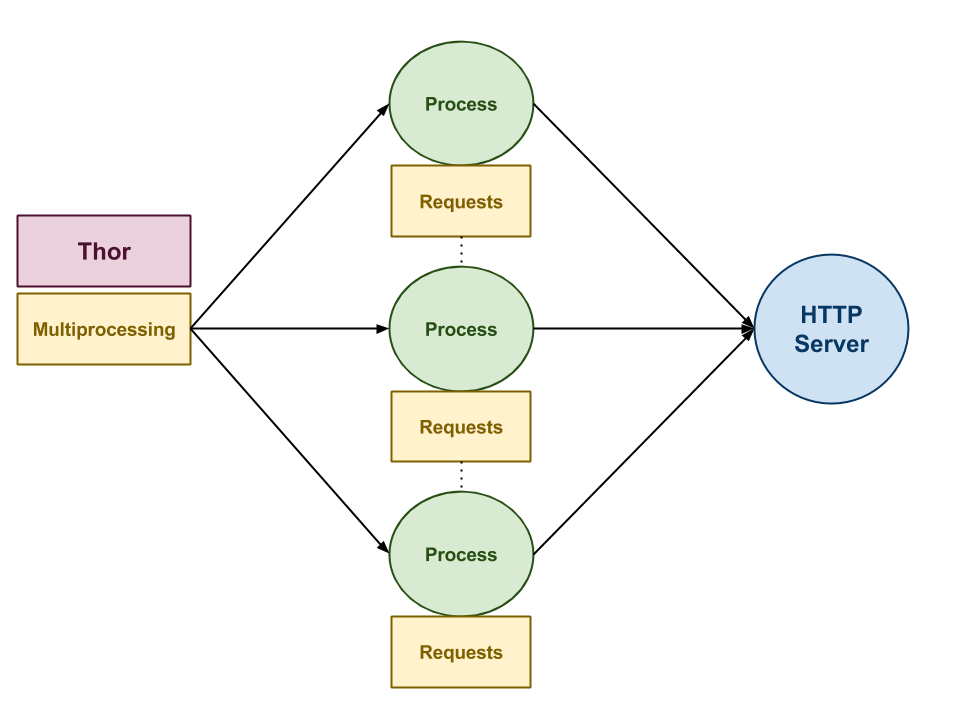
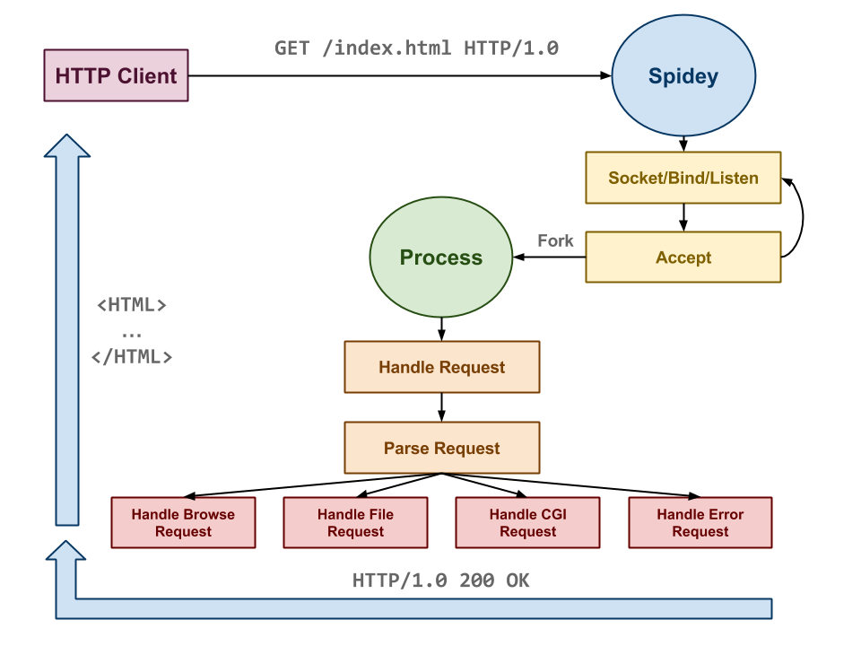

In the spring semester of my Sophomore year I took the course Systems Programming with Peter Bui. In this course we explored "various command line utilities, files, processes, memory management, system calls, data structures, networking, and concurrency" with the Unix programming environment. Throughout the semester we spent time focused on shell scripting, python scripting, and eventually low-level C programming. Most of all, we had the Unix Philosophy engraved within us: Write programs that (1) do one thing and do it well, (2) work together, (3) and handle text streams - the universal language.
Project Description
From the course website: "The goal of this project is to allow you to practice using low-level system calls related to sockets and networking. To do this, you will create two new programs:"
- thor: This is a basic HTTP client that will hammer a remote HTTP server by making multiple requests.
- spidey: This is a basic HTTP server that supports directory listings, static files, and CGI scripts.
In order to implement the HTTP server we:
- Allocate a server socket, bind it to a port, and then listen for incoming connections.
- Accept an incoming client connection and parse the input data stream into a HTTP request structure.
- Form a response and send it back to the client based on the request's parameters.
- Continue to perform steps 2 and 3 for as long as the server is running. If it is in forking mode, then we fork after we accept a connection
and let the child process handle parsing and responding to the request. Otherwise, we simply handle one client at a time in single connection mode.
-

Diagram of thor python script
-

Diagram of entire spidey server